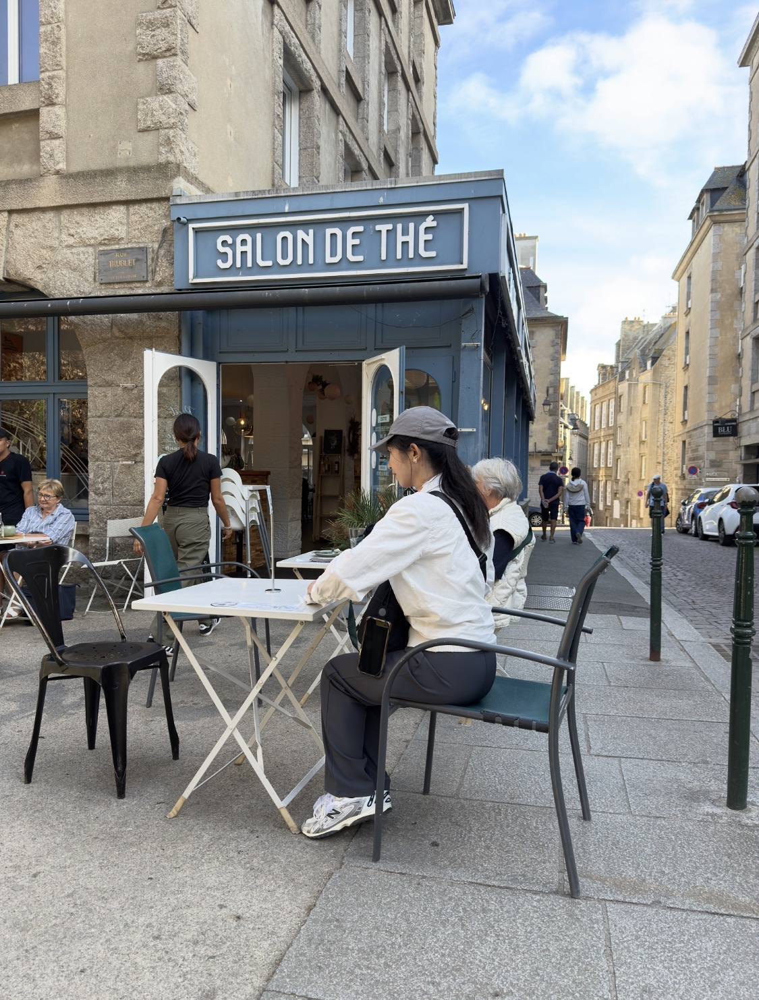
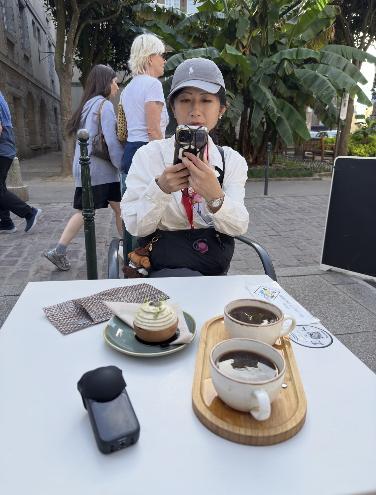
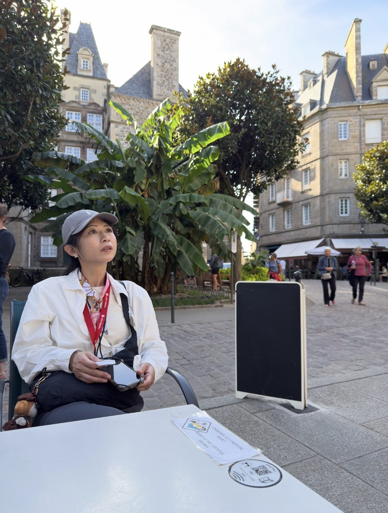
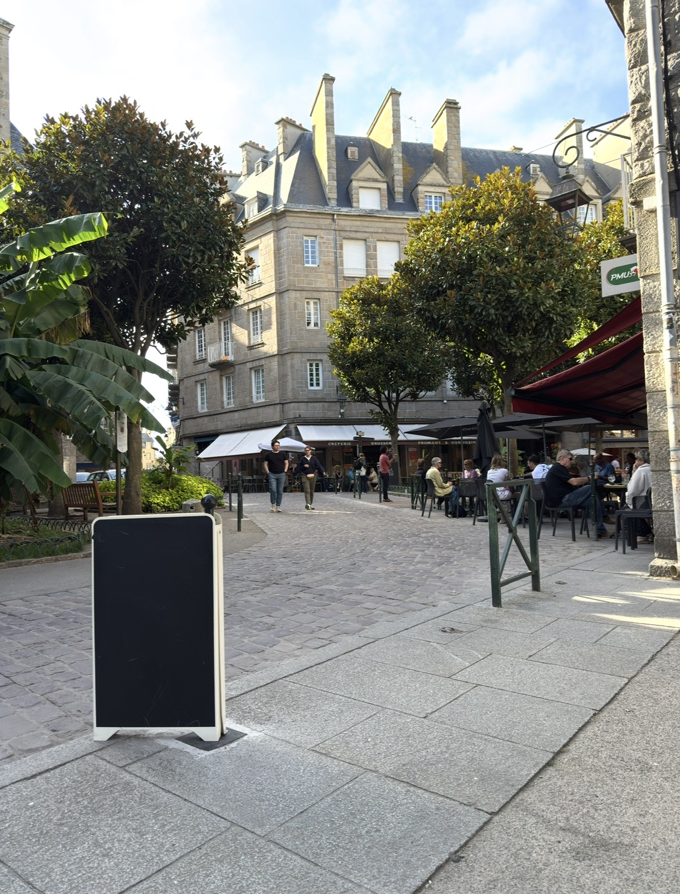

這一站最有意思的地方，是它不是「名店朝聖」。
至少當時不是。
在聖馬洛城牆內逛了一陣子之後，我只是想找一個可以真正坐下來的地方。前面的街區很熱鬧，紀念品店、餐館、人潮、石板路，全都擠在一起；可愈往裡走，聲音慢慢鬆掉了。
街道開始變得安靜。
不是荒涼，而是那種「遊客大多已經從前面轉彎了」的安靜。
我很喜歡這種旅行裡突然出現的空白。
真正讓人記住的咖啡館，有時不是因為咖啡多厲害，而是它剛好出現在你終於願意坐下來的那一刻。
原來這家店叫 La Maison du Sarrasin
當時我其實沒有把店名記下來，只記得門口很直接地寫著 SALON DE THÉ。
回來之後，我把照片裡的街名、位置和店家資料重新比對：Rue Trublet 旁、Place du Marché aux Légumes 這一帶，對上的就是 La Maison du Sarrasin – Salon de Thé。
它是 Breizh Café 系統裡專門以 sarrasin——蕎麥、也就是布列塔尼人說的黑麥／黑小麥文化——為核心的一間茶館。官方介紹甚至把這裡稱作「給蕎麥的一個展示盒」，甜點、蛋糕、薄餅都圍著這個主題做。
知道這件事以後，我才明白為什麼那顆看起來不算張揚的小甜點，吃起來會比預期有記憶點。

它不是 Long Black，比較像法國人的 Café allongé
咖啡我一直記得不是 espresso。
杯子比 espresso 大，黑咖啡的份量也比較長。我當時腦中一直把它歸類成「Long Black」那一類，回來重新查後，法國咖啡館裡更接近的叫法應該是 café allongé。
Allongé 字面上就是「拉長」。做法會把 espresso 的水量拉長，或以較長萃取／加水的方式做成一杯份量更大的黑咖啡。
它和澳洲、紐西蘭咖啡文化裡的 Long Black 並不完全是同一回事。Long Black 通常比較講究先放熱水、再把 espresso 落在上面，保留 crema 與濃度；café allongé 則更像法國咖啡館對「我想喝一杯比較長的黑咖啡」的回答。
而且很巧，我後來查到關於這家店的公開評論，真的有人直接寫到「café allongé」，甚至形容它喝起來很像放久的濾泡咖啡。
這一點我倒沒有那麼苛刻。
我的感覺比較簡單：不難喝，但也不是會讓我為了咖啡本身再跑一次的那種。
它比較像一杯熱飲，讓身體知道：現在可以坐著了。

反而是甜點，出乎意料
真正讓我有點意外的是旁邊那顆甜點。
外觀很克制，不是巴黎甜點櫃那種精雕細琢到像珠寶的風格；但一入口，結構、甜度、口感都比我原本預期好很多。
我現在沒有足夠資料替它硬寫一個正式品名，所以寧願把它留成「那顆意外很好吃的小塔」。
但至少可以確定，這間 Salon de Thé 的確以蕎麥甜點為重心，官方也特別介紹店內的 cakes、tartes 與甜點創作。
有時旅行就是這樣。原本只是想找杯熱的，結果記住的卻是旁邊那一小口。
遠離最熱鬧的街，才突然有了「坐在聖馬洛」的感覺
我很喜歡那個位置。
前一段路還是觀光老城：人多、店多、走路速度也快。到了這裡，桌子面向小廣場，植物、石屋、經過的人全都變得稀疏一點。
我們不用急著站起來。
也不用想下一張照片要在哪裡拍。
這和雙叟、花神完全不一樣。巴黎那兩家咖啡館本身就是目的；而聖馬洛這一桌，比較像旅行途中突然空出來的一段時間。
我後來才發現，我其實很需要這種東西。


我們以為切換成台語，就進入加密頻道了
後來隔壁桌來了一男一女。
男生是法國人，女生看起來像是東亞面孔。於是我跟老婆下意識提高了一點「語言警戒」，開始用台語聊天。
這個邏輯其實很台灣：
中文不安全，就切台語。
台語一開，彷彿自動進入私人頻道。
我的英文能力只能零零碎碎聽，但依稀聽到那位法國男生問女生：「他們在說什麼？」
女生回了一句，大意是：
「他們講的是在地語言，我聽不懂。」
那一刻我們大概更放心了。
很好，加密成功。
結果離開前，她用中文跟我們打招呼
然後故事就在最後一分鐘翻掉。
他們準備離開時，那位女生忽然用中文和我們打招呼。
我們才知道，她根本就是台灣人，而且已經在法國生活十多年。
只是——
她真的聽不懂台語。
所以前面那句「在地語言」完全沒有說錯。
現在回頭想，那段對話比咖啡豆產區、萃取參數都更有資格留在這篇裡。
因為咖啡館本來就是這種地方：你以為自己只是在休息，其實旁邊的人、語言、偶遇，都會偷偷變成旅行內容。
這杯咖啡沒有多厲害，但我記得那個下午
如果純粹用咖啡專業的角度來評價，我不會把這杯 café allongé 寫成什麼驚為天人的體驗。
它就是一杯喝起來舒服、溫熱、沒有負擔的黑咖啡。
甜點比咖啡更突出。
可是如果把整張桌子算進來——安靜的小廣場、老城深處的石屋、午後的光、坐下來之後慢下來的時間，還有隔壁桌那場差點成功的台語加密——它反而變成我很喜歡的一段。
咖啡沒有搶走場景。
這次，是場景把咖啡留下來了。
雙叟是一場等了三十年的赴約，花神是把自己定格在巴黎街角。
而聖馬洛這一杯，比較像旅行途中終於找到一張不催你走的桌子。
咖啡普通，甜點很好吃，風景很安靜。然後我們還學到一件事：台語確實很好用——只是遇到在法國住了十多年的台灣人時，最好不要太早得意。